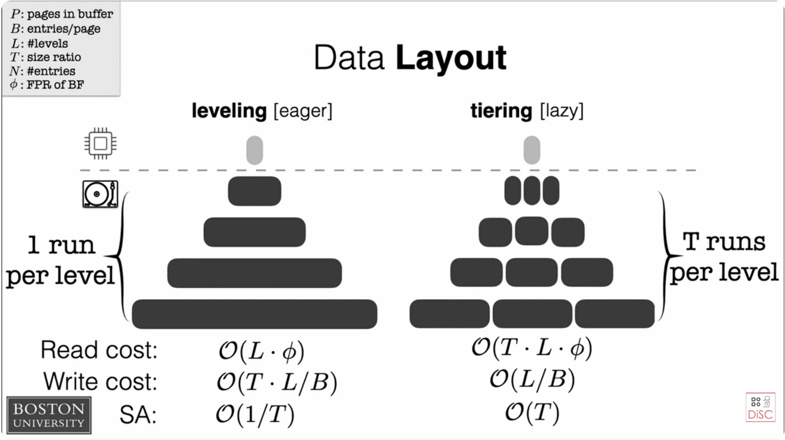

SSTable On-Disk Format¶
SSTables (Sorted String Tables) are the persistent storage layer of the LSM engine. Each SSTable is a directory containing four files that together represent a sorted, immutable collection of key-value records with a bloom filter for fast negative lookups and a sparse index for efficient point queries.
Directory Layout¶
Each SSTable lives in its own directory under data_root/sstable/L{level}/{file_id}/:
data_root/sstable/L0/019abc.../
├── data.bin — sorted KV records grouped into blocks
├── index.bin — sparse index (first key per block → byte offset)
├── filter.bin — bloom filter for probabilistic membership test
└── meta.json — metadata (written LAST as completeness signal)
The presence of meta.json is the completeness signal. If it is missing, the SSTable is considered incomplete (e.g., crash during write) and is ignored on recovery.
Level Architecture¶

L0 — Multiple Overlapping SSTables¶
L0 holds up to l0_compaction_threshold (default: 10) SSTables simultaneously. Key ranges may overlap between files — two L0 SSTables can both contain the same key. Every get() must check all L0 files and return the result with the highest sequence number.
L1, L2, L3 — One SSTable Per Level¶
Each level above L0 holds exactly one SSTable — the fully merged, deduplicated result of compaction. Key ranges are non-overlapping within a level, so a single bisect on the sparse index is sufficient.
Record Encoding¶
Each record in data.bin uses this binary format:
- Key and value lengths are 2-byte big-endian unsigned integers
- Sequence number and timestamp are 8-byte big-endian signed integers
- CRC32 covers the header + key + value (integrity verification)
Data Blocks¶
Records are grouped into blocks of approximately block_size bytes (default: 4096). When the accumulated buffer exceeds the block size, it is flushed to data.bin. The sparse index records the first key and byte offset of each block.
In dev mode, blocks are sized by entry count (len(snapshot) // 8) rather than byte size, producing more predictable block boundaries for testing.
SSTableWriter State Machine¶
The writer is a write-once builder with a strict lifecycle:
put()must be called with keys in ascending order (enforced)finish()is async (L0) — writes bloom filter and index concurrently viaasyncio.gatherfinish_sync()is synchronous (L1+) — used in compaction subprocesses where blocking is acceptable
SSTableReader¶
Reads use memory-mapped I/O (mmap) for zero-copy access to data.bin. Bloom filter and sparse index are loaded lazily on the first get() call and cached in the shared BlockCache for cross-restart reuse.
Point lookup flow: bloom filter check → sparse index bisect → block scan via mmap.
Bloom Filter Configuration¶
The bloom filter's false positive rate is environment-aware:
| Mode | Config key | Default | Effect |
|---|---|---|---|
| Dev | bloom_fpr_dev |
0.05 | Smaller filters, faster builds |
| Prod | bloom_fpr_prod |
0.01 | Fewer false disk reads |
The expected item count is derived from actual data — len(snapshot) for flush, sum of input record counts for compaction — ensuring optimal filter sizing.
SSTableMeta¶
The metadata dataclass captures everything needed to reason about an SSTable without opening its data file:
file_id, snapshot_id, level, size_bytes, record_count, block_count, min_key, max_key, seq_min, seq_max, bloom_fpr, created_at, data_file, index_file, filter_file
Serialized to JSON with base64-encoded keys (raw bytes are not valid JSON strings).